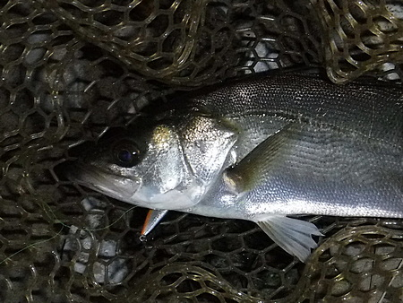
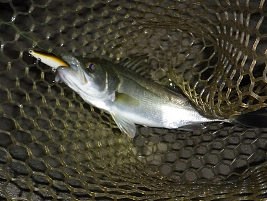

釣行日誌 故郷編
2023/09/16 お百度を踏む
昔読んだ、開高健のエッセイには、「森と河は、釣り人にとっての大聖堂である.....」というようなことが書いてあった。
私にとっては、お百度を踏む神社の境内のような漁場に、夜な夜な通い、新規のルアーを試す。
中国の通販サイトから取り寄せたフローティング・シンキング両タイプのミノーは、どちらも良くアピールし、フックの品質も申し分なかった。親指の爪にしっかり刺さるし。ちょっと日本の感覚からは、不細工に見えるフローティングだが、その体積のおかげでしっかり重く、良く飛ぶのに良く浮く。アクションも素晴らしい。
この品質で、約530円、送料無料（航空便！）というのは、非常にありがたい。魚との闘いと言うよりも、財布との闘いになってきている昨今である。（笑）
ダイソーの 110円フローティングミノーは、フックを渓流仕様のシングル・バーブレスに替えていたため、キャッチには至らなかったが、小型が多数ヒットしてその集魚力の高さを見せつけた。年々バリエーションが増えてきて感心させられる。以前はシンキングしかなかったのに。
今日は、明るいうちはボラ狙いで節操の無い、ウキ＋ダイソーワーム＋カミツブシなどで遊んだためか、最初のうち、まったく魚信が無かった。暗くなってから突如手応えが有り、大事に寄せて来て慎重にネットでランディング。連夜の自己記録更新で、目測40cm ほどあった。さらに34、30cm ほどを追加し、21:00 頃におチビちゃんを釣って店じまい。

連夜の自己記録更新(笑)

左右に走り、柔らかいロッドを引き絞った。
ミノーをしっかり喰っていた。
ミノーをしっかり喰っていた。
左右に走り、柔らかいロッドを引き絞って楽しませてくれる、このくらいのサイズの釣りが僕には向いているのかも知れない。
2024/01/31
釣行日誌 故郷編 目次へ
サイトマップ
ホームへ
お問い合わせ